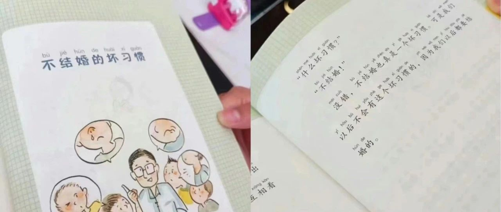

毒教材宣扬搞异性恋，诱导1年级小学生结婚
“全面性教育的内容特别强调循证基础，从事实出发，不是先入为主地灌输理念，或者那些没有事实和证据作为基础的内容，因为那些内容本身很可能是习而不察的误解甚至是偏见。” ——何为“全面性教育”
最近“一小学教辅图书诱导未成年结婚”话题引起关注，该书用大段篇幅教育儿童读者以后一定要去结婚，文中称：“不结婚是坏习惯，我们没有这个坏习惯，我们以后都要结婚！”

季华园性少数编辑经了解后发现，一本名为《彩虹色星期五》的儿童读物，在其第121页有专门一章题为《不结婚的坏习惯》的课文，将“不选择结婚”定义为“不良行为”；我们注意到，这篇课文内容中写道：
“什么（是）坏习惯？不结婚！”
“没错，不结婚真是一个坏习惯，我们以后都要结婚的。”
“我们以后不会有这个坏习惯的……”

据查询信息得知，《彩虹色星期五》由北京少年儿童出版社出版，梅子涵创作，摆渡船文化传媒销售，编号9787530161401。从广告和宣传物料中可知，这本儿童读物的定位读者人群是小学1～2年级学生，即6～8岁左右的儿童。
有相关介绍称，“《不结婚的坏习惯》用幽默和机智的语言，从生理、心理、社会等方面阐述了不结婚会给人带来的各种弊端，比如容易生病、孤独寂寞、没有后代、影响社会稳定等。”

我们看到书本还有拼音的标注，在未成年还这么小的时候，只有6岁，甚至拼音都还没有学会的状态之下，我们的儿童读物便去讲婚姻选择，还传播“一定要结婚”和都去选择搞异性恋的价值观，这样做合适吗？放在这个年龄段合适吗？

（注：《珍爱生命——小学生性健康教育读本》：“结婚与否都是个人的自由”）
那么我们需要的性教育，究竟应该是什么样的？🌈
本文编辑：颜
参考资料：北京少年儿童出版社、摆渡船文化传媒、